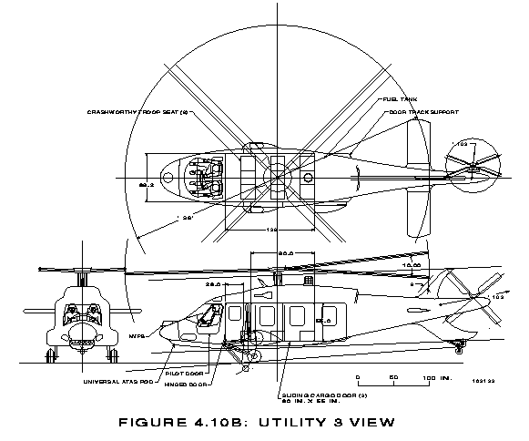
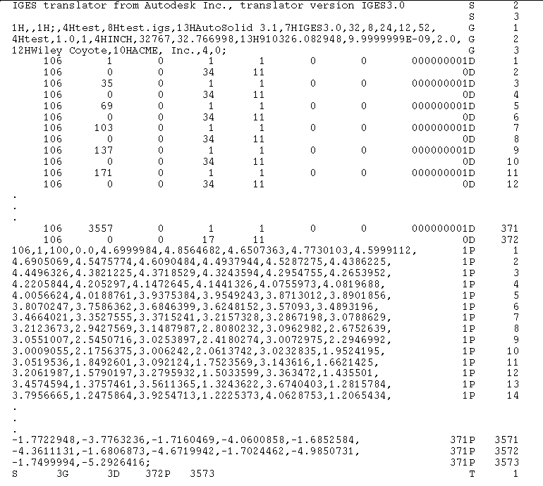

Nearly every CAD system on the market today supports exchange of two-dimensional drawings via IGES. An example of a drawing received at ARL in IGES format is shown in figure 1. IGES[7]
 Figure 1. Sample IGES Drawing
Although the IGES form of that drawing has no direct application to generating a solid model of the helicopter in the BRL-CAD system, it must be noted that the IGES file does contain data suitable for capture by a preprocessor that could simplify the making of the solid model. Work is in progress with just that objective; however, that exploitation of IGES is beyond the scope of this report.
The IGES specification defines a neutral file format for the exchange of product definition data. This neutral file may be in one of three formats: ASCII, compressed ASCII, or binary. The ASCII form is the most commonly used and is the only form considered in this report. This format is based on fixed-length 80-character records. The ASCII file format consists of five sections, a start section, a global section, a directory section, a parameter section, and a terminate section. Figure 2 shows an example of an ASCII format IGES file.
 Figure 2. Sample IGES FIle
The start section is merely a place for any human-readable comments that the sender wishes to include. The global section contains information for use by the post-processor (receiving translator) such as the units used in the IGES file, a scale factor, the date the file was generated, the sender's name, and so forth. The actual data in the IGES file are recorded as a number of entities. Each entity has a specific purpose and a specific format within the file. Each entity must have its own entry in the directory section. Directory section entries consist of two 80-character records that contain information about that particular entity such as what type of entity it is, whether this entity requires a transformation matrix applied to it (and where the directory entry for the matrix can be found), the form number (if required), the color of the object, and where the parameters that define this entity are located. The pointers in the directory section that indicate where other data are to be found are simply sequence numbers (literally, line numbers) usually in the parameter section. The parameter section contains the detailed data for each entity in a free-form style with each field separated by an end-of-field delimiter and each record terminated with an end-of-record delimiter. Both these delimiters are defined in the global section. The parameter section is followed by the terminate section which consists of a single 80-character record containing the number of records used for each section of the file.
IGES supports the following entities for a CSG solid model
Both the solid of revolution and the solid of linear extrusion may make use of any of the IGES curve entities. These curves may be specified using any of the following entity types:
The solid instance entity allows a copy of another solid to be used without redefining it and includes the capability to apply a different transformation matrix to the copy. The boolean tree entity describes the operations and operands to build an object which may be the entire model under consideration or just a small part. The operators allowed in the boolean tree are intersection, union, and subtraction. The operands may be any CSG solid, solid instances, or other boolean trees. The solid assembly entity defines a collection of items that share a fixed geometric relationship. Any solid objects may be grouped by this entity.